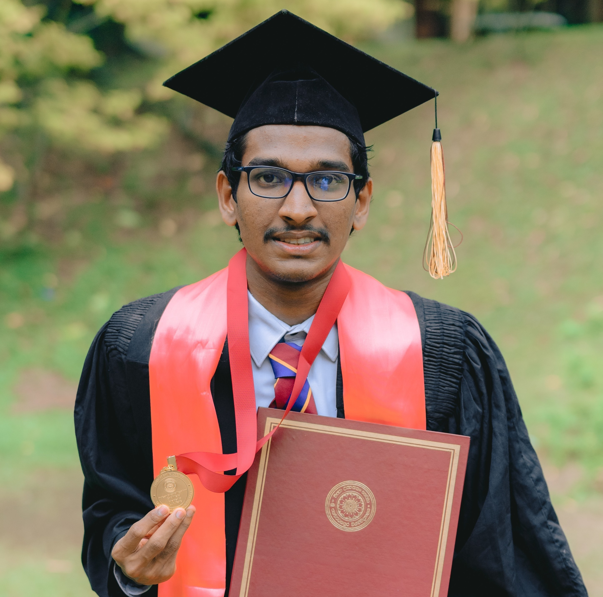

About Me
I am a Mathematics graduate from the University of Sri Jayewardenepura (USJ), Sri Lanka, and an incoming Fall 2026 fully funded Master's research student at KAIST, South Korea. During my bachelor's degree at USJ, I was the highest GPA holder in Mathematics in my batch. I served as a Teaching Assistant at USJ, Visiting Lecturer at the Faculty of Technology, University of Colombo, and currently serve as a Visiting Lecturer at GISM Institute.
Current Courses
Past Courses
Quick Links
Research Interests
Mathematical Biology, Computational Mathematics, Mathematical Modeling, Functional Analysis, Topology, Numerical Analysis, Probability Theory and Statistics.
Office Hours
Contact
Email: janindunethmal@gmail.com
Portfolio: Academic Portfolio